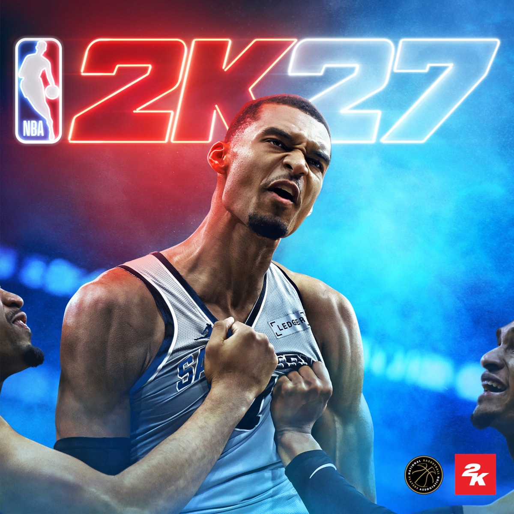

游戏房间 / 最近在玩
LIFE IN
PLAY✳.
把日落留给公路，把深夜留给球场。这里收藏我的另一种热爱，也留下一点认真玩过的痕迹。
01 / FESTIVAL FREQUENCY日本へようこそ ↗
开放世界 / 日本 / 兜风
FORZAHORIZON6™
下一站，不急着抵达。
拐进东京的霓虹，或者干脆往山的方向开。喜欢赛车，也喜欢在一场比赛之外，停下来看看风景。
TOKYO35°40′ / 139°45′
DRIVE. EXPLORE. REPEAT.
DRIVE. EXPLORE. REPEAT.

FRAME / 01HORIZON / JAPAN
官方视觉 / 非个人游戏截图
私人驾驶手记
历史快照车库手记
01 / GARAGE—车库车辆
02 / COLLECTION—不同车型
03 / PHOTO BOOK—已拍摄车型
最新存档记录
02 / AFTER DARK ARENATHE LIGHTS STAY ON ●

STANDARD EDITION / 20262K
篮球 / 生涯 / 再来一场
NBA 2K27
灯亮着，就再打一场。
从现实里的篮球场，到屏幕里的最后一投。喜欢库里，喜欢篮球，也喜欢那种投出去之后，等着球落进篮筐的瞬间。
球场灯光
STEAM 本地记录
PLAYER / CHEFZC我的上场记录
累计游玩—HOURS / MINUTES
近两周游玩—
生涯存档—
自定义阵容存档—
最新存档记录
SAVE POINT / 003
每个数字，都有来处。
这里是有日期的个人游戏记录，不是实时排行榜。只展示能核实的数字，让热爱有自己的时间线。
查看数据来源与读取状态+
本次读取
视觉致谢
下一局见。回到个人介绍 ↗